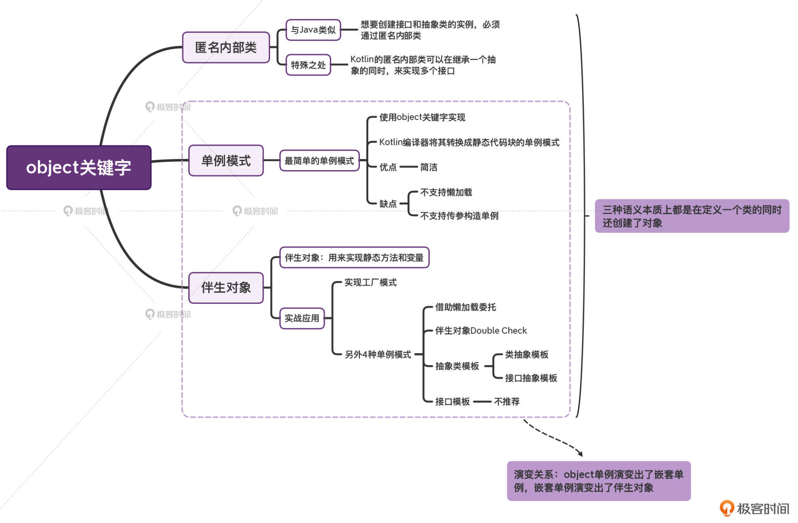

Audioobject关键字：你到底有多少种用法？
你好，我是朱涛。这节课我们来学习 Kotlin 当中 object 关键字的三种语义，以及它的具体使用场景。
在前面课程中，我们学习了 Kotlin 语言的基础语法和面向对象相关的语法，其中涵盖了很多不同类型的关键字。比如说，fun 关键字代表了定义函数，class 关键字代表了定义类，这些都是一成不变的。但是今天我们要学习的 object 关键字，却有三种迥然不同的语义，分别可以定义：
匿名内部类；
单例模式；
伴生对象。
之所以会出现这样的情况，是因为 Kotlin 的设计者认为，这三种语义本质上都是在定义一个类的同时还创建了对象。在这样的情况下，与其分别定义三种不同的关键字，还不如将它们统一成 object 关键字。
那么，理解 object 关键字背后的统一语义，对我们学习这个语法是极其关键的，因为它才是这三种不同语义背后的共同点。通过这个统一语义，我们可以在这三种语义之间建立联系，形成知识体系。这样，我们在后面的学习中才不会那么容易迷失，也不会那么容易遗忘。
接下来，我们就一起来逐一探讨这三种情况吧。
object：匿名内部类
首先是 object 定义的匿名内部类。
Java 当中其实也有匿名内部类的概念，这里我们可以通过跟 Java 的对比，来具体理解下 Kotlin 中对匿名内部类的定义。
在 Java 开发当中，我们经常需要写类似这样的代码：
public interface OnClickListener {
void onClick(View v);
}
image.setOnClickListener(new View.OnClickListener() {
@Override
public void onClick(View v) {
gotoPreview();
}
});这就是典型的匿名内部类的写法，View.OnClickListener 是一个接口，因此我们在创建它的时候，必须实现它内部没有实现的方法。
类似地，在 Kotlin 当中，我们会使用 object 关键字来创建匿名内部类。同样，在它的内部，我们也必须要实现它内部未实现的方法。这种方式不仅可以用于创建接口的匿名内部类，也可以创建抽象类的匿名内部类。
image.setOnClickListener(object: View.OnClickListener {
override fun onClick(v: View?) {
gotoPreview()
}
})需要特殊说明的是，当 Kotlin 的匿名内部类只有一个需要实现的方法时，我们可以使用 SAM 转换，最终使用 Lambda 表达式来简化它的写法。这个话题我们会留到第 7 讲再详细分析。
所以也就是说，Java 和 Kotlin 相同的地方就在于，它们的接口与抽象类，都不能直接创建实例。想要创建接口和抽象类的实例，我们必须通过匿名内部类的方式。
不过，在 Kotlin 中，匿名内部类还有一个特殊之处，就是我们在使用 object 定义匿名内部类的时候，其实还可以在继承一个抽象类的同时，来实现多个接口。
我们看个具体的例子：
interface A {
fun funA()
}
interface B {
fun funB()
}
abstract class Man {
abstract fun findMan()
}
fun main() {
// 这个匿名内部类，在继承了Man类的同时，还实现了A、B两个接口
val item = object : Man(), A, B{
override fun funA() {
// do something
}
override fun funB() {
// do something
}
override fun findMan() {
// do something
}
}
}让我们分析一下这段代码。接口 A，它内部有一个 funA() 方法，接口 B，它内部有一个 funB() 方法，抽象类 Man，它内部有一个抽象方法 findMan()。
接着，在 main() 函数当中，我们使用 object 定义了一个匿名内部类。这个匿名内部类，不仅继承了抽象类 Man，还同时实现了接口 A、接口 B。而这种写法，在 Java 当中其实是不被支持的。
在日常的开发工作当中，我们有时会遇到这种情况：我们需要继承某个类，同时还要实现某些接口，为了达到这个目的，我们不得不定义一个内部类，然后给它取个名字。但这样的类，往往只会被用一次就再也没有其他作用了。
所以针对这种情况，使用 object 的这种语法就正好合适。我们既不用再定义内部类，也不用想着该怎么给这个类取名字，因为用过一次后就不用再管了。
object：单例模式
接着，我们再来了解下 object 定义的第二种语义，也就是单例模式。
object UserManager {
fun login() {}
}从以上代码中我们可以发现，当使用 object 以后，就不必再写 class 关键字了。我们只需要关注业务逻辑，至于这个单例模式到底是如何实现的，我们交给 Kotlin 编译器就行了。这种便捷性，在 Java 当中是不可想象的。要知道，单例模式的实现，在 Java 当中是会被当做面试题来考的！而在 Kotlin 当中，它已变得无比简单。
public final class UserManager {
public static final UserManager INSTANCE;
static {
UserManager var0 = new UserManager();
INSTANCE = var0;
}
private UserManager() {}
public final void login() {}
}可以看到，当我们使用 object 关键字定义单例类的时候，Kotlin 编译器会将其转换成静态代码块的单例模式。因为static{}代码块当中的代码，由虚拟机保证它只会被执行一次，因此，它在保证了线程安全的前提下，同时也保证我们的 INSTANCE 只会被初始化一次。
不过到这里，你或许就会发现，这种方式定义的单例模式，虽然具有简洁的优点，但同时也存在两个缺点。
不支持懒加载。这个问题很容易解决，我们在后面会提到。
不支持传参构造单例。举个例子，在 Android 开发当中，很多情况下我们都需要用到 Context 作为上下文。另外有的时候，在单例创建时可能也需要 Context 才可以创建，那么如果这时候单纯只有 object 创建的单例，就无法满足需求了。
那么，Kotlin 当中有没有其他方式来实现单例模式呢？答案当然是有的，不过，我们要先掌握 object 的第三种用法：伴生对象。
object：伴生对象
我们都知道，Kotlin 当中没有 static 关键字，所以我们没有办法直接定义静态方法和静态变量。不过，Kotlin 还是为我们提供了伴生对象，来帮助实现静态方法和变量。
在正式讲解伴生对象之前，我们先来看看 object 定义单例的一种特殊情况，看看它是如何演变成“伴生对象”的：
class Person {
object InnerSingleton {
fun foo() {}
}
}可以看到，我们可以将单例定义到一个类的内部。这样，单例就跟外部类形成了一种嵌套的关系，而我们要使用它的话，可以直接这样写：
Person.InnerSingleton.foo()以上的代码看起来，foo() 就像是静态方法一样。不过，为了一探究竟，我们可以看看 Person 类反编译成 Java 后是怎样的。
public final class Person {
public static final class InnerSingleton {
public static final Person.InnerSingleton INSTANCE;
public final void foo() {}
private InnerSingleton() {}
static {
Person.InnerSingleton var0 = new Person.InnerSingleton();
INSTANCE = var0;
}
}
}可以看到，foo() 并不是静态方法，它实际上是通过调用单例 InnerSingleton 的实例上的方法实现的：
// Kotlin当中这样调用
Person.InnerSingleton.foo()
// 等价
// ↓ java 当中这样调用
Person.InnerSingleton.INSTANCE.foo()这时候，你可能就会想：要如何才能实现类似 Java 静态方法的代码呢？
其实很简单，我们可以使用“@JvmStatic”这个注解，如以下代码所示：
class Person {
object InnerSingleton {
@JvmStatic
fun foo() {}
}
}所以这个时候，如果你再反编译 Person 类，你会发现，foo() 这个方法就变成了 InnerSingleton 类当中的一个静态方法了。
public final class Person {
public static final class InnerSingleton {
// 省略其他相同代码
public static final void foo() {}
}
}这样一来，对于 foo() 方法的调用，不管是 Kotlin 还是 Java，它们的调用方式都会变成一样的：
Person.InnerSingleton.foo()看到这里，如果你足够细心，你一定会产生一个疑问：上面的静态内部类“InnerSingleton”看起来有点多余，我们平时在 Java 当中写的静态方法，不应该是只有一个层级吗？比如：
public class Person {
public static void foo() {}
}
// 调用的时候，只有一个层级
Person.foo()那么，在 Kotlin 当中有办法实现这样的静态方法吗？
答案当然是有的，我们只需要在前面例子当中的 object 关键字前面，加一个 companion 关键字即可。
class Person {
// 改动在这里
// ↓
companion object InnerSingleton {
@JvmStatic
fun foo() {}
}
}companion object，在 Kotlin 当中就被称作伴生对象，它其实是我们嵌套单例的一种特殊情况。也就是，在伴生对象的内部，如果存在“@JvmStatic”修饰的方法或属性，它会被挪到伴生对象外部的类当中，变成静态成员。
public final class Person {
public static final Person.InnerSingleton InnerSingleton = new Person.InnerSingleton((DefaultConstructorMarker)null);
// 注意这里
public static final void foo() {
InnerSingleton.foo();
}
public static final class InnerSingleton {
public final void foo() {}
private InnerSingleton() {}
public InnerSingleton(DefaultConstructorMarker $constructor_marker) {
this();
}
}
}根据上面反编译后的代码，我们可以看出来，被挪到外部的静态方法 foo()，它最终还是调用了单例 InnerSingleton 的成员方法 foo()，所以它只是做了一层转接而已。
到这里，也许你已经明白 object 单例、伴生对象中间的演变关系了：普通的 object 单例，演变出了嵌套的单例；嵌套的单例，演变出了伴生对象。
你也可以换个说法：嵌套单例，是 object 单例的一种特殊情况；伴生对象，是嵌套单例的一种特殊情况。
伴生对象的实战应用
前面我们已经使用 object 关键字实现了最简单的单例模式，这种方式的缺点是不支持懒加载、不支持“getInstance() 传递参数”。而借助 Kotlin 的伴生对象，我们可以实现功能更加全面的单例模式。
不过，在使用伴生对象实现单例模式之前，我们需要先热热身，用它来实现工厂模式。下面，我就给你详细介绍一下。
工厂模式
所谓的工厂模式，就是指当我们想要统一管理一个类的创建时，我们可以将这个类的构造函数声明成 private，然后用工厂模式来暴露一个统一的方法，以供外部使用。Kotlin 的伴生对象非常符合这样的使用场景：
// 私有的构造函数，外部无法调用
// ↓
class User private constructor(name: String) {
companion object {
@JvmStatic
fun create(name: String): User? {
// 统一检查，比如敏感词过滤
return User(name)
}
}
}在这个例子当中，我们将 User 的构造函数声明成了 private 的，这样，外部的类就无法直接使用它的构造函数来创建实例了。与此同时，我们通过伴生对象，暴露出了一个 create() 方法。在这个 create() 方法当中，我们可以做一些统一的判断，比如敏感词过滤、判断用户的名称是否合法。
另外，由于“伴生对象”本质上还是属于 User 的嵌套类，伴生对象仍然还算是在 User 类的内部，所以，我们是可以在 create() 方法内部调用 User 的构造函数的。
这样，我们就通过“伴生对象”巧妙地实现了工厂模式。接下来，我们继续看看如何使用“伴生对象”来实现更加复杂的单例设计模式。
另外 4 种单例模式的写法
在前面，我们已经学习了 Kotlin 当中最简单的单例模式，也就是 object 关键字。同时，我们也提到了，这种方式虽然简洁，但它也存在两大问题：第一，无法懒加载；第二，不支持传参。
那么，Kotlin 当中有没有既支持懒加载又支持传参的单例模式呢？
答案当然是有的。接下来，我们就来了解下 Kotlin 里功能更加全面的 4 种单例模式，分别是懒加载委托单例模式、Double Check 单例模式、抽象类模板单例，以及接口单例模板。
第一种写法：借助懒加载委托
其实，针对懒加载的问题，我们在原有的代码基础上做一个非常小的改动就能优化，也就是借助 Kotlin 提供的“委托”语法。
比如，针对前面的单例代码，我们在它内部的属性上使用 by lazy 将其包裹起来，这样我们的单例就能得到一部分的懒加载效果。
object UserManager {
// 对外暴露的 user
val user by lazy { loadUser() }
private fun loadUser(): User {
// 从网络或者数据库加载数据
return User.create("tom")
}
fun login() {}
}可以看到，UserManager 内部的 user 变量变成了懒加载，只要 user 变量没有被使用过，它就不会触发 loadUser() 的逻辑。
这其实是一种简洁与性能的折中方案。一个对象所占用的内存资源毕竟不大，绝大多数情况我们都可以接受。而从服务器去请求用户信息所消耗的资源更大，我们能够保证这个部分是懒加载的，就算是不错的结果了。
注意：这里我们用到了 by lazy，它是 Kotlin 当中的“懒加载委托”语法。我们会在第 9 讲里详细介绍它。目前你只需要知道，它可以保证懒加载的同时，还能保证线程安全即可。
第二种写法：伴生对象 Double Check
我们直接看代码吧：
class UserManager private constructor(name: String) {
companion object {
@Volatile private var INSTANCE: UserManager? = null
fun getInstance(name: String): UserManager =
// 第一次判空
INSTANCE?: synchronized(this) {
// 第二次判空
INSTANCE?:UserManager(name).also { INSTANCE = it }
}
}
}
// 使用
UserManager.getInstance("Tom")首先，我们定义了一个伴生对象，然后在它的内部，定义了一个 INSTANCE，它是 private 的，这样就保证了它无法直接被外部访问。同时它还被注解“@Volatile”修饰了，这可以保证 INSTANCE 的可见性，而 getInstance() 方法当中的 synchronized，保证了 INSTANCE 的原子性。因此，这种方案还是线程安全的。
同时，我们也能注意到，初始化情况下，INSTANCE 是等于 null 的。这也就意味着，只有在 getInstance() 方法被使用的情况下，我们才会真正去加载用户数据。这样，我们就实现了整个 UserManager 的懒加载，而不是它内部的某个参数的懒加载。
另外，由于我们可以在调用 getInstance(name) 方法的时候传入初始化参数，因此，这种方案也是支持传参的。
不过，以上的实现方式仍然存在一个问题，在实现了 UserManager 以后，假设我们又有一个新的需求，要实现 PersonManager 的单例，这时候我们就需要重新写一次 Double Check 的逻辑。
class UserManager private constructor(name: String) {
companion object {
// 省略代码
}
}
class PersonManager private constructor(name: String) {
companion object {
@Volatile private var INSTANCE: PersonManager? = null
fun getInstance(name: String): PersonManager =
INSTANCE?: synchronized(this) {
INSTANCE?:PersonManager(name).also { INSTANCE = it }
}
}
}可以看到，不同的单例当中，我们必须反复写 Double Check 的逻辑，这是典型的坏代码。这种方式不仅很容易出错，同时也不符合编程规则（Don’t Repeat Yourself）。
那么，有没有一种办法可以让我们复用这部分逻辑呢？答案当然是肯定的。
第三种写法：抽象类模板
我们来仔细分析下第二种写法的单例。其实很快就能发现，它主要由两个部分组成：第一部分是 INSTANCE 实例，第二部分是 getInstance() 函数。
现在，我们要尝试对这种模式进行抽象。在面向对象的编程当中，我们主要有两种抽象手段，第一种是类抽象模板，第二种是接口抽象模板。
这两种思路都是可以实现的，我们先来试试抽象类的方式，将单例当中通用的“INSTANCE 实例”和“getInstance() 函数”，抽象到 BaseSingleton 当中来。
// ① ②
// ↓ ↓
abstract class BaseSingleton<in P, out T> {
@Volatile
private var instance: T? = null
// ③
// ↓
protected abstract fun creator(param: P): T
fun getInstance(param: P): T =
instance ?: synchronized(this) {
// ④
// ↓
instance ?: creator(param).also { instance = it }
}
}在仔细分析每一处注释之前，我们先来整体看一下上面的代码：我们定义了一个抽象类 BaseSingleton，在这个抽象类当中，我们把单例当中通用的“INSTANCE 实例”和“getInstance() 函数”放了进去。也就是说，我们把单例类当中的核心逻辑放到了抽象类当中去了。
现在，我们再来看看上面的 4 处注释。
注释①：abstract 关键字，代表了我们定义的 BaseSingleton 是一个抽象类。我们以后要实现单例类，就只需要继承这个 BaseSingleton 即可。
注释②：in P, out T 是 Kotlin 当中的泛型，P 和 T 分别代表了 getInstance() 的参数类型和返回值类型。注意，这里的 P 和 T，是在具体的单例子类当中才需要去实现的。如果你完全不知道泛型是什么东西，可以先看看泛型的介绍，我们在第 10 讲会详细介绍 Kotlin 泛型。
注释③：creator(param: P): T 是 instance 构造器，它是一个抽象方法，需要我们在具体的单例子类当中实现此方法。
注释④：creator(param) 是对 instance 构造器的调用。
这里，我们就以前面的 UserManager、PersonManager 为例，用抽象类模板的方式来实现单例，看看代码会发生什么样的变化。
class PersonManager private constructor(name: String) {
// ① ②
// ↓ ↓
companion object : BaseSingleton<String, PersonManager>() {
// ③
// ↓
override fun creator(param: String): PersonManager = PersonManager(param)
}
}
class UserManager private constructor(name: String) {
companion object : BaseSingleton<String, UserManager>() {
override fun creator(param: String): UserManager = UserManager(param)
}
}在仔细分析注释之前，我们可以看到：UserManager、PersonManager 的代码已经很简洁了，我们不必重复去写“INSTANCE 实例”和“Double Check”这样的模板代码，只需要简单继承 BaseSingleton 这个抽象类，按照要求传入泛型参数、实现 creator 这个抽象方法即可。
下面我们来分析上面的 3 处注释。
注释①：companion object : BaseSingleton，由于伴生对象本质上还是嵌套类，也就是说，它仍然是一个类，那么它就具备类的特性“继承其他的类”。因此，我们让伴生对象继承 BaseSingleton 这个抽象类。
注释②：String, PersonManager，这是我们传入泛型的参数 P、T 对应的实际类型，分别代表了 creator() 的“参数类型”和“返回值类型”。
注释③：override fun creator，我们在子类当中实现了 creator() 这个抽象方法。
至此，我们就完成了单例的“抽象类模板”。通过这样的方式，我们不仅将重复的代码都统一封装到了抽象类“BaseSingleton”当中，还大大简化了单例的实现难度。
接下来，让我们对比着看看单例的“接口模板”。
第四种写法：接口模板
首先我需要重点强调，这种方式是不被推荐的，这里提出这种写法是为了让你熟悉 Kotlin 接口的特性，并且明白 Kotlin 接口虽然能做到这件事，但它做得并不够好。
如果你理解了上面的“抽象类模板”，那么，接口的这种方式你应该也很容易就能想到：
interface ISingleton<P, T> {
// ①
var instance: T?
fun creator(param: P): T
fun getInstance(p: P): T =
instance ?: synchronized(this) {
instance ?: creator(p).also { instance = it }
}
}可以看到，接口模板的代码结构和抽象类的方式如出一辙。而我们之所以可以这么做，也是因为 Kotlin 接口的两个特性：接口属性、接口方法默认实现。在第 1 讲的时候，我们提到过，Kotlin 当中的接口被增强了，让它与抽象类越来越接近，这个例子正好就可以说明这一点。抽象类能实现单例模板，我们的接口也可以。
说实话，上面的接口单例模板看起来还是比较干净的，好像也挑不出什么大的毛病。但实际上，如果你看注释①的地方，你会发现：
instance 无法使用 private 修饰。这是接口特性规定的，而这并不符合单例的规范。正常情况下的单例模式，我们内部的 instance 必须是 private 的，这是为了防止它被外部直接修改。
instance 无法使用 @Volatile 修饰。这也是受限于接口的特性，这会引发多线程同步的问题。
除了 ISingleton 接口有这样的问题，我们在实现 ISingleton 接口的类当中，也会有类似的问题。
class Singleton private constructor(name: String) {
companion object: ISingleton<String, Singleton> {
// ① ②
// ↓ ↓
@Volatile override var instance: Singleton? = null
override fun creator(param: String): Singleton = Singleton(param)
}
}注释①：@Volatile，这个注解虽然可以在实现的时候添加，但实现方可能会忘记，这会导致隐患。
注释②：我们在实现 instance 的时候，仍然无法使用 private 来修饰。
因此综合来看，单例“接口模板”并不是一种合格的实现方式。
不过，在研究这个接口模板的过程中，我们又重温了 Kotlin 接口属性、接口方法默认实现这两个特性，并且对这两个特性进行一次应用。与此同时，我们也理解了接口模板存在的缺陷，以及不被推荐的原因。
实际上，从一个知识锚点着手，我们用类似的方式，也可以帮助自己理解 Kotlin 其他的新特性。而在这个时候，我们会发现，Kotlin 语法之间并不是一些孤立的知识点，而是存在一些关联的，通过这种学习方式，能帮助我们快速建立起知识体系，这其实也是保持学习与思考连贯性的好办法。
小结
这节课，我们学习了 object 的三种语义，分别是匿名内部类、单例、伴生对象。

Kotlin 的匿名内部类和 Java 的类似，只不过它多了一个功能：匿名内部类可以在继承一个抽象类的同时还实现多个接口。
另外，object 的单例和伴生对象，这两种语义从表面上看是没有任何联系的。但通过这节课的学习我们发现了，单例与伴生对象之间是存在某种演变关系的。“单例”演变出了“嵌套单例”，而“嵌套单例”演变出了“伴生对象”。
然后，我们也借助 Kotlin 伴生对象这个语法，研究了伴生对象的实战应用，比如可以实现工厂模式、懒加载 + 带参数的单例模式。
尤其是单例模式，这节课中，我们一共提出了 Kotlin 当中 5 种单例模式的写法。除了最后一种“接口模板”的方式，是为了学习研究不被推荐使用以外，其他 4 种单例模式都是有一定使用场景的。这 4 种单例之间各有优劣，我们可以在工作中根据实际需求，来选择对应的实现方式：
如果我们的单例占用内存很小，并且对内存不敏感，不需要传参，直接使用 object 定义的单例即可。
如果我们的单例占用内存很小，不需要传参，但它内部的属性会触发消耗资源的网络请求和数据库查询，我们可以使用 object 搭配 by lazy 懒加载。
如果我们的工程很简单，只有一两个单例场景，同时我们有懒加载需求，并且 getInstance() 需要传参，我们可以直接手写 Double Check。
如果我们的工程规模大，对内存敏感，单例场景比较多，那我们就很有必要使用抽象类模板 BaseSingleton 了。
思考题
这节课当中，我们提到的 BaseSingleton 是否还有改进的空间？这个问题会在第 7 讲“高阶函数”里做出解答。
欢迎你在评论区分享你的思路，我们下节课再见。
COMMUNITY NOTES
读者评论
这篇文章暂时没有读者留言。